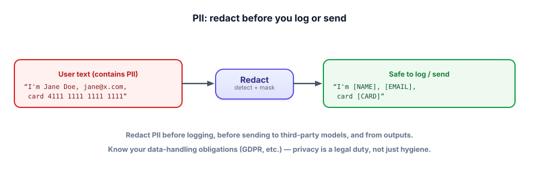

PII & privacy
PII (personally identifiable information) is anything that points to a real person: names, emails, phone numbers, card numbers, ID numbers.
AI apps copy text into many places: logs, traces, caches, search indexes and the model provider's servers.
Redaction swaps personal details for placeholders like [EMAIL] before the text is stored or sent.
Keep only the data you need, and delete it when you are done.
Redaction tools miss some names, so the stores still need locks and time limits.
Handling PII is like a school nurse keeping medical notes. She writes down only what she needs, keeps the notes in a locked drawer, blacks out names before sharing a report with the head teacher, and shreds old notes at the end of the year.
| In the picture | In the real system |
|---|---|
| Writing down only what she needs | Data minimisation: collect and keep only what the task needs |
| The locked drawer | Access control on logs, traces and vector stores |
| Blacking out names in the report | Redaction: placeholders such as [NAME] and [CARD] |
| Shredding old notes each year | Retention limits and deletion requests (for example GDPR Article 17) |
| Notes copied into five folders | The same data in logs, caches, vector stores and a provider's servers |
Where the picture breaks. A paper note is in one place, but data in an LLM app gets copied into logs, caches, vector stores and maybe a model provider's servers, so 'shred it' means finding every copy.
Going deeper
LLM apps swim in user data — and they log it, send it to third-party models, and sometimes repeat it back. Mishandling personal information isn’t just bad hygiene; it’s a legal liability. This lesson is how to handle data responsibly without crippling your app.
Why privacy is a first-class concern here
Three things make LLM apps privacy-risky. They log heavily (you need traces to debug, Track 6 — but traces contain user data). They often call third-party model APIs (your users’ data leaves your servers). And they can echo data back (a model might surface one user’s info to another, or repeat sensitive input). On top of that, regulations like GDPR give you real obligations around personal data. So you must know what PII flows through your system and control it deliberately.

PII (personally identifiable information) is data that identifies a person — names, emails, phone numbers, addresses, government IDs, payment details. Redaction (masking) replaces PII with placeholders before storing or sending. Data minimization means collecting and retaining only what you actually need. Retention limits mean deleting data after it’s served its purpose. Together these reduce both risk and regulatory exposure.
Try a redactor
This catches common PII with simple patterns. Type (or use the sample) and watch it mask emails, phones, cards, and IDs before anything would be logged.
PII redactor
Mask PII at the boundary. For production, a library like the free, open-source Microsoft Presidio detects far more than regex can.
import re
PATTERNS = {
"[EMAIL]": r"[\w.+-]+@[\w-]+\.[\w.-]+",
"[CARD]": r"\b(?:\d[ -]*?){13,16}\b",
"[SSN]": r"\b\d{3}-\d{2}-\d{4}\b",
"[PHONE]": r"\(?\d{3}\)?[ -]?\d{3}[ -]?\d{4}",
}
def redact(text):
for tag, pat in PATTERNS.items():
text = re.sub(pat, tag, text)
return text
raw = "Email jane@x.com, card 4111 1111 1111 1111"
log(redact(raw)) # "Email [EMAIL], card [CARD]" → safe to store
# Redact at THREE points: before logging, before third-party API calls, and on outputs.
# For names/addresses and high accuracy, use Presidio (free) — a model-based detector.Regex handles structured PII (emails, cards, IDs) well; names and addresses need a model-based detector like Presidio. The key habit is redacting at the boundary — the moment data would leave your control or land in a log.
Assumptions: an Indian insurer transcribes 300,000 calls a day, about 1,200 words each, and sends them to an LLM for summaries and quality scoring. Each call mentions on average 3 person names, plus phone numbers, policy numbers and sometimes card numbers.
- Structured PII first. Regex for emails, phone numbers, policy IDs and cards. For cards, add a Luhn checksum test so a 16-digit policy number is not mislabelled as a card.
- Names and addresses need a model. Use a named-entity detector such as Microsoft Presidio (docs). Name mentions per day: 300,000 x 3 = 900,000.
- Plan for misses. If your measured name recall is 95%, then 900,000 x 0.05 = 45,000 names a day still get through. Redaction lowers risk; it does not remove it. So the downstream stores still need access control and retention limits.
- Pseudonymise, do not just delete. Replace each name with a consistent token per call ([PERSON_1], [PERSON_2]) so the summary still reads sensibly. Keep the token-to-name map in a separate, tightly controlled store for 30 days in case an agent must follow up.
- Redaction points. Before the transcript is logged, before it is sent to the model provider, and on the model's output before it is stored, because the model can still echo values that slipped through.
- Measure it like a model. Hand-label 500 transcripts, report recall and precision per entity type each release, and track the missed-entity count per day as a risk number leadership understands.
- Deletion requests. Under GDPR Article 17 (text) and similar laws, a customer may ask for erasure. Because every store is keyed by call ID, you can delete the transcript, its vectors, cached summaries and trace spans in one job.
- LLM apps leak PII via heavy logging, third-party API calls, and echoing data back.
- Redact PII before logging, before sending to third parties, and from outputs.
- Practice data minimization and retention limits — don’t collect or keep what you don’t need.
- Regex catches structured PII; use a model-based detector (e.g., Presidio) for names/addresses.
- Privacy is a legal duty (GDPR, etc.), not optional hygiene — know your obligations.
Your support bot calls a third-party LLM API and logs full conversations for debugging. A privacy review flags it. What’s the right fix?
Best defense against PII leaking to a third-party model API?
Your regex redactor catches 99% of emails and cards. A privacy reviewer still flags the logs. What is the most likely gap?
A customer asks you to delete their data. It was used to fine-tune a model last quarter. What is true?
1. Name the three points in an LLM pipeline where you should redact PII.
2. Why is regex insufficient for redacting names and addresses, and what do you use instead?
3. A user invokes their “right to be forgotten.” What does that imply for your logs, vector store, and any fine-tune data?
▸ Show solutions & reasoning
1. (a) Before logging/tracing (so stored traces don’t contain raw PII), (b) before sending to a third-party model/API (so data doesn’t leave your control unnecessarily), and (c) on outputs (so the model doesn’t surface PII to the wrong person). Redaction lives at every data boundary.
2. Names and addresses have no fixed pattern — “Jane Doe” looks like ordinary words, and addresses vary wildly — so regex either misses them or over-matches. You use a model-based PII detector (named-entity recognition), e.g., the free Microsoft Presidio, which understands context to find person names, locations, and organizations. Use regex for structured tokens (emails, cards, SSNs) and a model for unstructured PII.
3. You must be able to actually delete that person’s data wherever it lives: remove or anonymize their entries in logs/traces, delete their documents and the corresponding vectors from the vector store (and re-index), and — critically — if their data was used to fine-tune a model, you generally can’t “unlearn” it from the weights, so you’d need to retrain without it. This is exactly why fine-tuning on personal data is risky and why minimization and good data lineage matter from day one.
There’s a real tension in this track: Track 6 told you to log everything for debugging and evals, and this lesson tells you to be careful what you store. The resolution isn’t to pick one — it’s to design them together. Redact PII before it’s written to traces (so your logs are useful but not a liability), keep raw data only transiently where you truly need it, set retention windows that auto-delete, and gate access to whatever sensitive data remains.
Done right, you get full observability over redacted data, which is enough to debug the vast majority of issues. When you genuinely need un-redacted data (a hard bug), pull it under stricter access controls and short retention.
Two broader points for production. First, the third-party question is often the biggest one: sending user data to an external model API means it leaves your infrastructure, so you must check the provider’s data-handling terms (do they train on it? how long do they retain it?), and for the most sensitive data, consider self-hosting an open model (the free local stack from this course) so nothing leaves at all.
Second, privacy is a legal and trust issue, not just technical — regulations like GDPR/CCPA carry real penalties, and users’ trust is hard to win back once lost. Treat personal data as something you’re borrowing, not owning: collect the minimum, protect it in transit and at rest, redact it from logs and outputs, delete it when done, and be able to honor deletion requests. That posture keeps you both compliant and trustworthy.
labs/08_llmops.pyFree and offline once set up: Ollama with qwen2.5:7b, plus the packages in labs/README.md. From the course folder:
python labs/08_llmops.pyWhat to look for: Two things to look at. Section 2 masks a PAN number before the prompt reaches the model (input_guard), and the spans in traces.jsonl store no prompt text at all, so nothing personal is logged. Then add a request containing a person's name: the regex guards do not catch names, which is exactly the gap this lesson describes.
Small samples: these labs use 5 to 20 cases so they run in minutes on a laptop. Where they report a rate, they print n and a 95% Wilson interval. Read them as a demonstration of the mechanism, not as a measured rate for your system; for that you need hundreds of cases and several seeds.
▸ Recorded output (our run, 2026-11-03, qwen2.5:7b on a laptop GPU)
semantic similarity to the cached 'track my order': paraphrase=0.657 different intent (cancel)=0.523
semantic hits at threshold 0.9: 0
Look: a threshold low enough to catch the paraphrase would sit close to the wrong-intent score.
Serving 'how to track' to someone who asked 'how to cancel' is worse than a cache miss. Tune the
threshold on labelled pairs, scope caches per intent/tenant, and log every semantic hit for review.
traces written to traces.jsonl; first span:
{"trace_id": "54d669838c1f47758c9099aba0110b3f", "name": "chat qwen2.5:7b", "gen_ai.operation.name": "chat", "gen_ai.provider.name": "ollama", "gen_ai.request.model": "qwen2.5:7b", "gen_ai.prompt.name": "support_answer", "gen_ai.prompt.version": 2, "prompt.hash": "5ab3d11ffb3b", "user.id": "u-123",
4) Prompt version rollout: v1 vs v2 on the same question, both traced
v1 hash=47ed77f326d6 -> "Yes, you can return innerwear as long as it meets your retailer's return policy conditions, such as being unus"
v2 hash=5ab3d11ffb3b -> 'Please contact support for specific return policies on innerwear.'
Check the facts too: store policy (labs/data/kb.json, ret-01) says innerwear cannot be returned. Neither
prompt has retrieval, so any 'yes' is a hallucination; the version that defers to support is the safer one.
Look: the trace links every answer to an exact prompt hash and model, so a bad answer is debuggable,
and a rollout is a registry change you can roll back, not a code edit buried in a deploy.Your numbers will differ a little run to run. Full log: labs/outputs. Source: labs/08_llmops.py.
Warm-up. List every place a single customer chat might be copied in a typical RAG support app.
▸ Solution
The chat database, application logs, trace spans (prompt and answer), the LLM provider's request logs (check their retention terms), any semantic or exact-match cache, analytics events, the eval or golden set if someone copied it there, support tickets created from the chat, backups of all of the above, and the vector store if conversations are indexed. Each is a place where redaction, access control and deletion must apply.
Transfer. Your team wants to send customer emails to a hosted LLM API. List the questions you must answer before turning it on.
▸ Solution
What data categories are in the emails (identifiers, financial, health)? Does the provider train on API data by default, and how long does it retain requests? In which region is data processed, and does that meet your legal requirements? Can you redact before sending without breaking the task? Do you have a data processing agreement? Can you delete or exclude a specific customer's data later? Is there a self-hosted or in-region option for the most sensitive subset? Write the answers down with links to the provider's terms, and review when the terms change.
Stretch. Design a PII handling pipeline for an LLM-based analytics feature on a warehouse table with 50 million customer rows.
▸ Solution
1) Classify columns once with a scanner plus human review: direct identifiers, quasi-identifiers (pin code, birth date), free text. 2) Never send direct identifiers to the model; replace them with stable surrogate keys in a view. 3) For free-text columns, run batch redaction (regex plus NER) into a redacted copy, and log per-entity counts. 4) Grant the LLM job access only to the redacted view through a service account. 5) For aggregates, enforce minimum group sizes (for example, no group under 20 customers) to limit re-identification. 6) Outputs go through the same redactor before storage. 7) Deletion: a job keyed on customer ID removes rows from source, redacted copy, caches and indexes. 8) Measure redaction recall quarterly on a labelled sample.
Junior Where can PII leak in an LLM application?
▸ Model answer
In logs and traces, which often store full prompts and answers. In calls to third-party model APIs, where data leaves your infrastructure. In model outputs, where the model may repeat sensitive input or reveal data retrieved for another user. In caches and vector stores that hold copies of conversations or documents. And in training or fine-tuning data, where it can be memorised. OWASP lists this as LLM02:2025 Sensitive Information Disclosure. The basic defences are data minimisation, redaction at each boundary, access control, retention limits and the ability to delete.
Mid How would you evaluate a PII redaction system?
▸ Model answer
Build a labelled set of realistic texts, with every PII span marked by type, including hard cases such as Indian names, addresses written in mixed scripts and numbers that look like cards but are not. Measure recall and precision per entity type, because missing a card number is worse than over-masking a city. Report misses as an expected count at production volume, for example 45,000 names a day, so the residual risk is clear. Re-run on each change to patterns or the NER model, and sample production output to check for drift.
Senior A multi-tenant SaaS RAG product must guarantee one customer's data never appears in another's answers. How do you design for that?
▸ Model answer
Enforce isolation in retrieval, not in the prompt. Every chunk carries a tenant ID, and every vector query includes a mandatory tenant filter applied by the server from the authenticated session, never from model output. Consider separate indexes or namespaces for large tenants. Caches are keyed by tenant. Traces and evals are partitioned by tenant with access control. Test it: automated cross-tenant probes in CI that query tenant A with tenant B's secrets and expect nothing. Monitor for any retrieved chunk whose tenant does not match the session, and treat one occurrence as an incident. Then add output scanning as a second layer.
We’ve protected your instructions and your data. Now we make sure the model doesn’t produce harmful content in the first place — or at least never ships it. Next: content safety.
In one line: Personal data spreads into every log and copy, so mask it at the door and delete it on time.